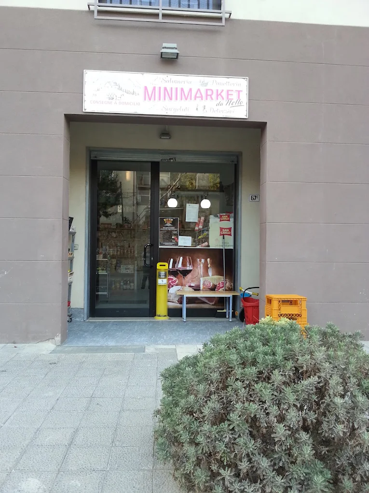
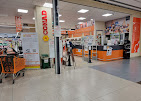
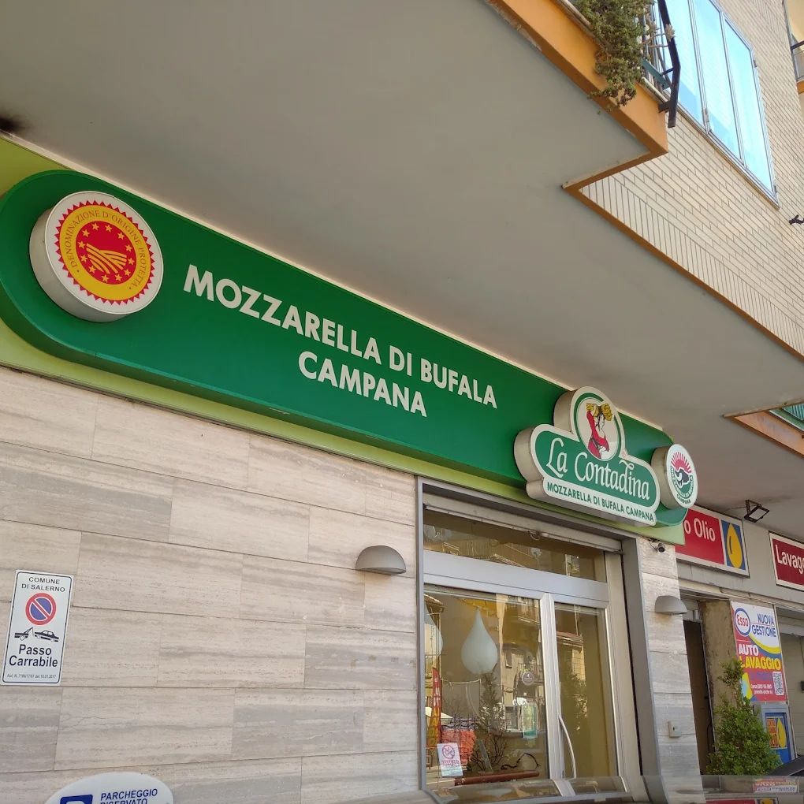

Dove fare la spesa
Qui trovate minimarket, supermercati e negozi utili vicino alla casa o comodi da raggiungere in auto.

Minimarket da Nello
È il minimarket vicino casa, raggiungibile a piedi. Comodo per piccole necessità, acqua, snack, prodotti essenziali o una spesa veloce senza prendere l'auto.

CONAD Superstore - Le Cotoniere
Consigliato per la spesa principale: è grande, ben fornito e si trova nel centro commerciale Le Cotoniere. Trovate banco gastronomia, pescheria, macelleria, frutta, verdura e prodotti confezionati.
MD - Via Irno
Supermercato/discount comodo e facile da raggiungere, conosciuto per prezzi convenienti, soprattutto per frutta, verdura e prodotti di uso quotidiano.
Sole 365 - Zona Vinciprova
Supermercato comodo se vi trovate in zona Vinciprova o vicino alla stazione. È utile per una spesa completa, prodotti freschi e acquisti quotidiani.
Eurospin - Zona Grand Hotel Salerno
Discount grande e conveniente, utile se volete fare una spesa più economica o comprare diversi prodotti. È comodo se passate dalla zona del Grand Hotel Salerno.
Lidl - Mariconda
Discount tedesco in zona Mariconda, comodo per una spesa economica e ben fornita. Ottimo per prodotti da forno, frutta, verdura e offerte settimanali.

La Contadina - Via Irno
Negozio/caseificio consigliato per acquistare mozzarella di bufala campana, latticini e prodotti freschi. Non è un ristorante, ma è perfetto se volete comprare qualcosa di tipico da gustare a casa.